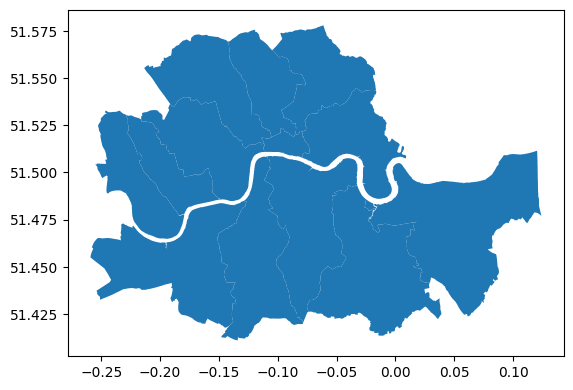
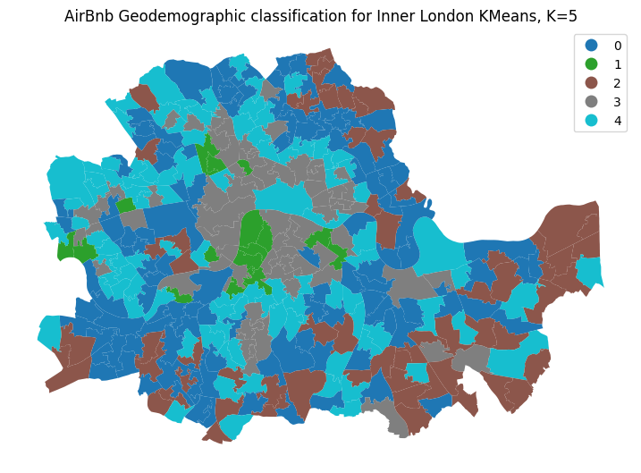
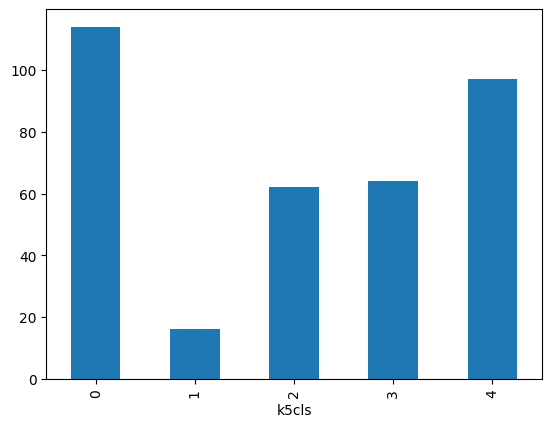
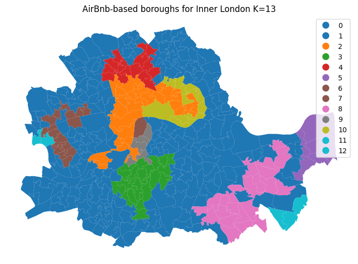
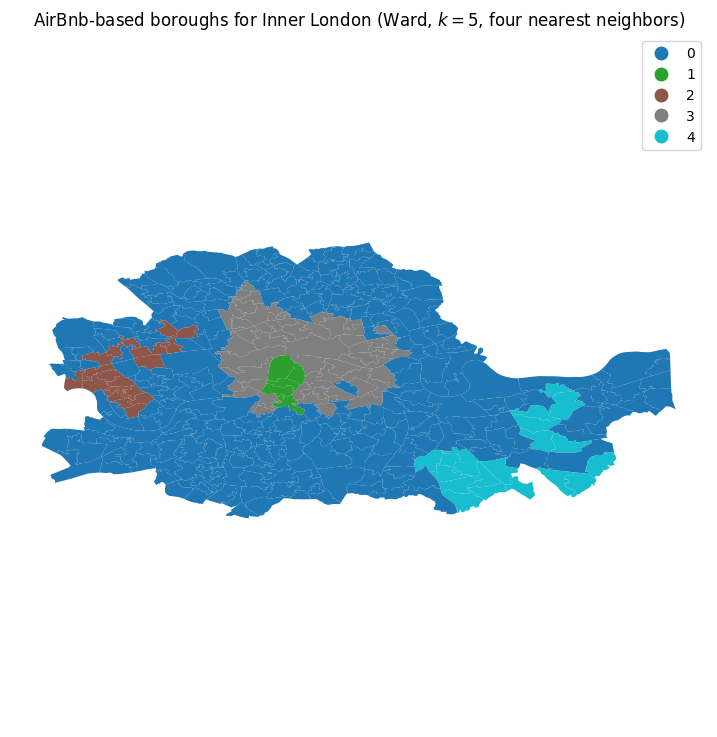
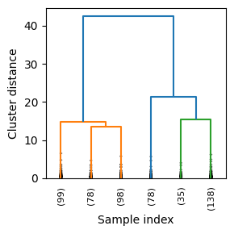
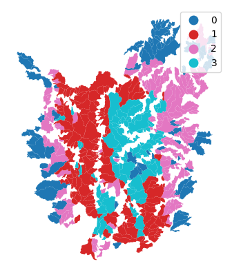
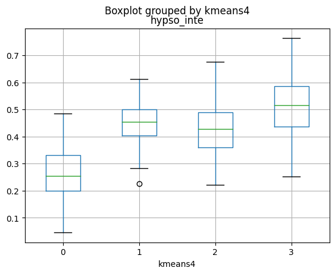
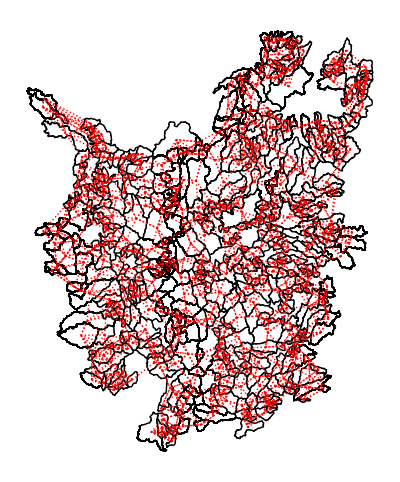
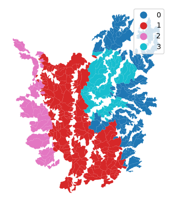

Créditos: El contenido de este cuaderno ha sido tomado de varias fuentes, Muntasir Wahed, Ander Fernández Jauregui, pero especialmente de los cursos y libros publicados abierta y libremente por Dani Arribas-Bel - University of Liverpool & Sergio Rey - Center for Geospatial Sciences, University of California, Riverside. El compilador se disculpa por cualquier omisión involuntaria y estaría encantado de agregar un reconocimiento.
Cluster espacial#
Esta sesión cubre el agrupamiento (cluster) estadístico de observaciones espaciales. Muchas preguntas y temas son fenómenos complejos que involucran varias dimensiones y son difíciles de resumir en una sola variable. En términos estadísticos, llamamos a esta familia de problemas multivariados, en oposición a los casos univariados donde solo se considera una sola variable en el análisis. El agrupamiento aborda este tipo de preguntas reduciendo su dimensionalidad, es decir, el número de variables relevantes que el analista necesita analizar, y convirtiéndolo en un conjunto más intuitivo de clases que incluso audiencias no técnicas pueden entender y comprender. Por esta razón, se utiliza ampliamente en contextos aplicados como la toma de decisiones políticas o el marketing. Además, dado que estos métodos no requieren muchas suposiciones preliminares sobre la estructura de los datos, es una herramienta exploratoria comúnmente utilizada, ya que puede dar rápidamente pistas sobre la forma, la estructura y el contenido de un conjunto de datos.
La idea básica del agrupamiento estadístico es resumir la información contenida en varias variables creando un número relativamente pequeño de categorías. Luego, cada observación en el conjunto de datos se asigna a una, y solo una, categoría según sus valores para las variables consideradas originalmente en la clasificación. Si se hace correctamente, el ejercicio reduce la complejidad de un problema multidimensional mientras conserva toda la información significativa contenida en el conjunto de datos original. Esto se debe a que, una vez clasificado, el analista solo necesita verificar en qué categoría cae cada observación, en lugar de considerar los múltiples valores asociados con cada una de las variables y tratar de descifrar cómo combinarlos de manera coherente.
Aunque existen muchas técnicas para agrupar estadísticamente observaciones en un conjunto de datos, todas se basan en la premisa de utilizar un conjunto de atributos para definir clases o categorías de observaciones que son similares dentro de cada una de ellas, pero difieren entre grupos. Cómo se define la similitud dentro de los grupos y la disimilitud entre ellos y cómo se opera el algoritmo de clasificación es lo que hace que las técnicas difieran y también lo que hace que cada una de ellas sea especialmente adecuada para problemas específicos o tipos de datos. Como ilustración, solo nos sumergiremos en uno de estos métodos, K-means, que es probablemente la técnica más comúnmente utilizada para el agrupamiento estadístico.
Pero antes de proceder a una agrapacion espacial, realicemos inicialmente un agrupamiento que no considera la espacialidad como por ejemplo el método K-means
Objetivos de aprendizaje#
Al finalizar este notebook, el estudiante será capaz de:
Aplicar K-means para agrupar subcuencas según sus características geomorfológicas.
Implementar agrupamiento jerárquico aglomerativo (Ward) y leer dendrogramas.
Implementar SKATER para clustering espacialmente constrenido (regionalización).
Evaluar la calidad del clustering con el coeficiente de Silhouette y el método del codo.
Comparar resultados de clustering espacial vs. no espacial e interpretar sus diferencias.
Requisitos previos: 07_MatrizCorrelacion — matrices de pesos espaciales; nociones de aprendizaje no supervisado.
from esda.moran import Moran
import numpy as np
import libpysal.weights.set_operations as Wsets
from libpysal.weights import Queen, KNN
import seaborn as sns
from libpysal import weights
import geopandas as gpd
import contextily as cx
from sklearn import cluster
from sklearn.cluster import KMeans, AgglomerativeClustering
C:\Users\edier\AppData\Roaming\Python\Python314\site-packages\tqdm\auto.py:21: TqdmWarning: IProgress not found. Please update jupyter and ipywidgets. See https://ipywidgets.readthedocs.io/en/stable/user_install.html
from .autonotebook import tqdm as notebook_tqdm
# Read the file in
abb = gpd.read_file("https://darribas.org/gds_course/content/data/london_abb.gpkg")
# Inspect the structure of the table
abb.info()
---------------------------------------------------------------------------
gaierror Traceback (most recent call last)
File ~\miniconda3\envs\geospatial\Lib\urllib\request.py:1321, in AbstractHTTPHandler.do_open(self, http_class, req, **http_conn_args)
1320 try:
-> 1321 h.request(req.get_method(), req.selector, req.data, headers,
1322 encode_chunked=req.has_header('Transfer-encoding'))
1323 except OSError as err: # timeout error
File ~\miniconda3\envs\geospatial\Lib\http\client.py:1358, in HTTPConnection.request(self, method, url, body, headers, encode_chunked)
1357 """Send a complete request to the server."""
-> 1358 self._send_request(method, url, body, headers, encode_chunked)
File ~\miniconda3\envs\geospatial\Lib\http\client.py:1404, in HTTPConnection._send_request(self, method, url, body, headers, encode_chunked)
1403 body = _encode(body, 'body')
-> 1404 self.endheaders(body, encode_chunked=encode_chunked)
File ~\miniconda3\envs\geospatial\Lib\http\client.py:1353, in HTTPConnection.endheaders(self, message_body, encode_chunked)
1352 raise CannotSendHeader()
-> 1353 self._send_output(message_body, encode_chunked=encode_chunked)
File ~\miniconda3\envs\geospatial\Lib\http\client.py:1113, in HTTPConnection._send_output(self, message_body, encode_chunked)
1112 del self._buffer[:]
-> 1113 self.send(msg)
1115 if message_body is not None:
1116
1117 # create a consistent interface to message_body
File ~\miniconda3\envs\geospatial\Lib\http\client.py:1057, in HTTPConnection.send(self, data)
1056 if self.auto_open:
-> 1057 self.connect()
1058 else:
File ~\miniconda3\envs\geospatial\Lib\http\client.py:1492, in HTTPSConnection.connect(self)
1490 "Connect to a host on a given (SSL) port."
-> 1492 super().connect()
1494 if self._tunnel_host:
File ~\miniconda3\envs\geospatial\Lib\http\client.py:1023, in HTTPConnection.connect(self)
1022 sys.audit("http.client.connect", self, self.host, self.port)
-> 1023 self.sock = self._create_connection(
1024 (self.host,self.port), self.timeout, self.source_address)
1025 # Might fail in OSs that don't implement TCP_NODELAY
File ~\miniconda3\envs\geospatial\Lib\socket.py:846, in create_connection(address, timeout, source_address, all_errors)
845 exceptions = []
--> 846 for res in getaddrinfo(host, port, 0, SOCK_STREAM):
847 af, socktype, proto, canonname, sa = res
File ~\miniconda3\envs\geospatial\Lib\socket.py:983, in getaddrinfo(host, port, family, type, proto, flags)
982 addrlist = []
--> 983 for res in _socket.getaddrinfo(host, port, family, type, proto, flags):
984 af, socktype, proto, canonname, sa = res
gaierror: [Errno 11001] getaddrinfo failed
During handling of the above exception, another exception occurred:
URLError Traceback (most recent call last)
Cell In[2], line 2
1 # Read the file in
----> 2 abb = gpd.read_file("https://darribas.org/gds_course/content/data/london_abb.gpkg")
3
4 # Inspect the structure of the table
5 abb.info()
File ~\AppData\Roaming\Python\Python314\site-packages\geopandas\io\file.py:300, in _read_file(filename, bbox, mask, columns, rows, engine, **kwargs)
294 if _is_url(filename):
295 # if it is a url that supports random access -> pass through to
296 # pyogrio/fiona as is (to support downloading only part of the file)
297 # otherwise still download manually because pyogrio/fiona don't support
298 # all types of urls (https://github.com/geopandas/geopandas/issues/2908)
299 try:
--> 300 with urllib.request.urlopen(
301 Request(filename, headers={"Range": "bytes=0-1"})
302 ) as response:
303 if (
304 response.headers.get("Accept-Ranges") == "none"
305 or response.status != HTTPStatus.PARTIAL_CONTENT
306 ):
307 from_bytes = True
File ~\miniconda3\envs\geospatial\Lib\urllib\request.py:187, in urlopen(url, data, timeout, context)
185 else:
186 opener = _opener
--> 187 return opener.open(url, data, timeout)
File ~\miniconda3\envs\geospatial\Lib\urllib\request.py:487, in OpenerDirector.open(self, fullurl, data, timeout)
484 req = meth(req)
486 sys.audit('urllib.Request', req.full_url, req.data, req.headers, req.get_method())
--> 487 response = self._open(req, data)
489 # post-process response
490 meth_name = protocol+"_response"
File ~\miniconda3\envs\geospatial\Lib\urllib\request.py:504, in OpenerDirector._open(self, req, data)
501 return result
503 protocol = req.type
--> 504 result = self._call_chain(self.handle_open, protocol, protocol +
505 '_open', req)
506 if result:
507 return result
File ~\miniconda3\envs\geospatial\Lib\urllib\request.py:464, in OpenerDirector._call_chain(self, chain, kind, meth_name, *args)
462 for handler in handlers:
463 func = getattr(handler, meth_name)
--> 464 result = func(*args)
465 if result is not None:
466 return result
File ~\miniconda3\envs\geospatial\Lib\urllib\request.py:1369, in HTTPSHandler.https_open(self, req)
1368 def https_open(self, req):
-> 1369 return self.do_open(http.client.HTTPSConnection, req,
1370 context=self._context)
File ~\miniconda3\envs\geospatial\Lib\urllib\request.py:1324, in AbstractHTTPHandler.do_open(self, http_class, req, **http_conn_args)
1321 h.request(req.get_method(), req.selector, req.data, headers,
1322 encode_chunked=req.has_header('Transfer-encoding'))
1323 except OSError as err: # timeout error
-> 1324 raise URLError(err)
1325 r = h.getresponse()
1326 except:
URLError: <urlopen error [Errno 11001] getaddrinfo failed>
variables=["bathrooms", "bedrooms", "beds", "number_of_reviews"]
boroughs = gpd.read_file("https://darribas.org/gds_course/content/data/london_inner_boroughs.geojson")
boroughs.plot()
<Axes: >

K-means#
Un análisis geodemográfico implica la clasificación de las áreas que componen un mapa geográfico en grupos o categorías de observaciones que son similares entre sí pero diferentes entre ellas. La clasificación se realiza utilizando un algoritmo de agrupamiento estadístico que toma como entrada un conjunto de atributos y devuelve el grupo (“etiquetas” en la terminología) al que pertenece cada observación. Dependiendo del algoritmo particular utilizado, también se necesitan ingresar parámetros adicionales, como el número deseado de grupos o parámetros de ajuste más avanzados (por ejemplo, ancho de banda, radio, etc.). Para nuestra clasificación geodemográfica de las calificaciones de AirBnb en Inner London, utilizaremos uno de los algoritmos de agrupamiento más populares: K-means. Esta técnica solo requiere como entrada los atributos de las observaciones y el número final de grupos en los que queremos agrupar las observaciones. En nuestro caso, comenzaremos con cinco, ya que esto nos permitirá analizar cada uno de ellos más de cerca.
K-means es probablemente el enfoque más ampliamente utilizado para agrupar un conjunto de datos. El algoritmo agrupa las observaciones en un número preespecificado de grupos para que cada observación esté más cerca de la media de su propio grupo que de la media de cualquier otro grupo. El problema de k-means se resuelve iterando entre un paso de asignación y un paso de actualización. Primero, todas las observaciones se asignan aleatoriamente a una de las k etiquetas. A continuación, se calcula la media multivariante de todos los covariables para cada uno de los grupos. Luego, cada observación se vuelve a asignar al grupo cuya media esté más cercana. Si la observación ya está asignada al grupo cuya media está más cercana, la observación permanece en ese grupo. Este proceso de asignación y actualización continúa hasta que no sea necesario realizar más reasignaciones.
La naturaleza de este algoritmo requiere que seleccionemos el número de grupos que queremos crear. El número correcto de grupos es desconocido en la práctica. A modo de ilustración, utilizaremos k=5 en la implementación de K-means de scikit-learn. Para proceder, primero creamos un agrupador de K-means. Aunque el algoritmo subyacente no es trivial, ejecutar K-means en Python es sencillo gracias a scikit-learn. Similar al extenso conjunto de algoritmos disponibles en la biblioteca, su computación es cuestión de dos líneas de código. Primero, necesitamos especificar los parámetros en el método K-means (que es parte del submódulo cluster de scikit-learn). Nótese que, en este punto, ni siquiera necesitamos pasar los datos:
kmeans5 = cluster.KMeans(n_clusters=5)
k5cls = kmeans5.fit(abb[variables]);
C:\Users\edier\miniconda3\Lib\site-packages\sklearn\cluster\_kmeans.py:1416: FutureWarning: The default value of `n_init` will change from 10 to 'auto' in 1.4. Set the value of `n_init` explicitly to suppress the warning
super()._check_params_vs_input(X, default_n_init=10)
Esto configura un objeto que contiene todos los parámetros necesarios para ejecutar el algoritmo. En nuestro caso, solo pasamos el número de grupos (n_clusters) y el estado aleatorio, un número que garantiza que cada ejecución de K-means, que recuerde se basa en inicializaciones aleatorias, sea la misma y, por lo tanto, reproducible.
El objeto k5cls que acabamos de crear contiene varios componentes que pueden ser útiles para un análisis. Por ahora, utilizaremos las etiquetas, que representan las diferentes categorías en las que hemos agrupado los datos. Recuerda, en Python, la numeración comienza en cero, por lo que las etiquetas de grupo van de cero a cuatro. Las etiquetas se pueden extraer de la siguiente manera:
k5cls.labels_
array([4, 0, 4, 4, 2, 4, 4, 4, 4, 3, 0, 3, 3, 4, 4, 3, 0, 0, 4, 3, 0, 1,
3, 1, 1, 3, 4, 3, 3, 2, 2, 2, 0, 2, 2, 2, 4, 0, 4, 0, 0, 2, 4, 2,
3, 2, 3, 2, 4, 0, 0, 0, 4, 2, 2, 2, 4, 3, 2, 2, 2, 2, 0, 0, 2, 0,
2, 0, 4, 0, 2, 2, 2, 2, 2, 2, 0, 0, 0, 0, 0, 0, 2, 0, 4, 4, 4, 3,
4, 4, 0, 3, 4, 0, 3, 4, 3, 4, 1, 4, 1, 4, 4, 3, 4, 0, 4, 4, 4, 4,
0, 0, 4, 4, 0, 0, 0, 4, 3, 0, 0, 0, 0, 4, 0, 4, 0, 4, 3, 4, 0, 3,
4, 3, 3, 3, 4, 4, 4, 3, 3, 1, 0, 3, 0, 0, 0, 2, 0, 4, 0, 2, 4, 2,
0, 0, 0, 1, 1, 1, 3, 1, 1, 4, 4, 4, 4, 3, 4, 0, 4, 0, 3, 4, 3, 4,
3, 4, 4, 0, 3, 0, 2, 4, 2, 4, 0, 2, 2, 0, 4, 2, 4, 0, 0, 0, 0, 4,
0, 0, 4, 4, 0, 0, 2, 4, 4, 3, 2, 2, 0, 2, 4, 4, 2, 2, 2, 2, 4, 4,
0, 2, 2, 0, 0, 3, 4, 2, 0, 3, 3, 1, 1, 3, 3, 4, 3, 3, 1, 3, 0, 3,
3, 3, 3, 3, 4, 3, 4, 0, 4, 4, 0, 0, 4, 2, 2, 0, 0, 0, 2, 2, 4, 0,
0, 4, 3, 4, 0, 3, 0, 3, 0, 4, 0, 3, 3, 3, 2, 4, 0, 3, 3, 2, 0, 3,
3, 4, 0, 2, 0, 0, 3, 0, 1, 4, 0, 0, 0, 0, 0, 0, 0, 0, 4, 0, 0, 2,
4, 0, 2, 0, 2, 0, 2, 2, 0, 0, 0, 0, 2, 0, 0, 0, 2, 2, 4, 0, 0, 0,
2, 0, 4, 0, 4, 4, 4, 4, 4, 0, 0, 3, 4, 4, 3, 4, 3, 0, 3, 3, 1, 4,
3])
Cada número representa una categoría diferente, por lo que dos observaciones con el mismo número pertenecen al mismo grupo. Las etiquetas se devuelven en el mismo orden en que se pasaron los atributos de entrada, lo que significa que podemos agregarlas a la tabla original de datos como una columna adicional:
import matplotlib.pyplot as plt
abb['k5cls'] = k5cls.labels_
# Setup figure and ax
f, ax = plt.subplots(1, figsize=(9, 9))
# Plot unique values choropleth including a legend and with no boundary lines
abb.plot(column='k5cls', categorical=True, legend=True, linewidth=0, ax=ax)
# Remove axis
ax.set_axis_off()
# Add title
plt.title('AirBnb Geodemographic classification for Inner London KMeans, K=5')
# Display the map
plt.show()

El mapa anterior representa la distribución geográfica de las cinco categorías creadas por el algoritmo K-means. Un vistazo rápido muestra una fuerte estructura espacial en la distribución de los colores: el grupo cero (azul) se encuentra principalmente en el centro de la ciudad y apenas en la periferia, mientras que el grupo uno (verde) está concentrado principalmente en el sur. El grupo cuatro (turquesa) es intermedio, mientras que el grupo dos (marrón) es mucho más pequeño, conteniendo solo unas pocas observaciones.
Una vez que tenemos una idea de dónde y cómo se distribuyen las categorías en el espacio, también es útil explorarlas estadísticamente. Esto nos permitirá caracterizarlas, dándonos una idea del tipo de observaciones que se incluyen en cada una de ellas. Como primer paso, veamos cuántas observaciones hay en cada categoría. Para hacerlo, haremos uso del operador groupby introducido anteriormente, combinado con la función size, que devuelve el número de elementos en un subgrupo:
k5sizes = abb.groupby('k5cls').size()
_ = k5sizes.plot.bar()

Como sospechábamos por el mapa, los grupos tienen tamaños variables, con los grupos cero, tres y cuatro teniendo más de 75 observaciones cada uno, y uno y dos con menos de veinte.
Para describir la naturaleza de cada categoría, podemos examinar los valores de cada uno de los atributos que hemos utilizado para crearlas en primer lugar. Recuerde que utilizamos las calificaciones promedio en muchos aspectos (limpieza, comunicación del anfitrión, etc.) para crear la clasificación, así que podemos comenzar verificando el valor promedio de cada uno. Para hacerlo en Python, nos apoyaremos en el operador groupby, que combinaremos con la función mean:
# Calculate the mean by group
k5means = abb.groupby('k5cls')[variables].mean()
# Show the table transposed (so it's not too wide)
k5means.T
| k5cls | 0 | 1 | 2 | 3 | 4 |
|---|---|---|---|---|---|
| bathrooms | 1.317698 | 1.279521 | 1.317806 | 1.260049 | 1.300639 |
| bedrooms | 1.479685 | 1.348264 | 1.471523 | 1.350441 | 1.443016 |
| beds | 1.748557 | 1.723329 | 1.761279 | 1.693512 | 1.749863 |
| number_of_reviews | 13.359278 | 35.208487 | 8.545149 | 23.686831 | 17.948828 |
Agrupamiento espacial (Regionalización)#
En el contexto de preguntas explícitamente espaciales, un concepto relacionado, la región, también es fundamental. Una región es similar a un grupo, en el sentido de que todos los miembros de una región han sido agrupados juntos, y la región debería proporcionar un resumen de los datos originales. Además, para que una región sea analíticamente útil, sus miembros también deberían mostrar una mayor similitud entre sí que con los miembros de otras regiones. Sin embargo, las regiones son más complejas que los grupos porque combinan esta similitud en el perfil con información adicional sobre la geografía de sus miembros. En resumen, las regiones son como grupos (ya que tienen un perfil coherente), pero también tienen una geografía coherente: los miembros de una región también deberían estar ubicados cerca unos de otros.
El proceso de creación de regiones se llama regionalización. Una regionalización es un tipo especial de agrupación donde el objetivo es agrupar observaciones que son similares en sus atributos estadísticos, pero también en su ubicación espacial. En este sentido, la regionalización incorpora la misma lógica que las técnicas de agrupación estándar, pero también aplica una serie de restricciones espaciales y/o geográficas. A menudo, estas restricciones se relacionan con la conectividad: dos candidatos solo pueden agruparse juntos en la misma región si existe un camino de un miembro a otro que nunca abandona la región. Estos caminos a menudo modelan las relaciones espaciales en los datos, como la contigüidad o la proximidad. Sin embargo, la conectividad no siempre necesita mantenerse para todas las regiones, y en ciertos contextos tiene sentido relajar la conectividad o imponer diferentes tipos de restricciones espaciales.
En el caso del análisis de datos espaciales, hay un subconjunto de métodos que son de particular interés para muchos casos comunes en la Ciencia de Datos Geográficos. Estos son los llamados métodos de regionalización. Los métodos de regionalización pueden tomar muchas formas y caras, pero, en su núcleo, todos implican la agrupación estadística de observaciones con la restricción adicional de que las observaciones deben ser vecinas geográficas para estar en la misma categoría. Debido a esto, en lugar de categoría, usaremos el término área para cada observación y región para cada categoría, de ahí la regionalización, la construcción de regiones a partir de áreas más pequeñas.
La regionalización es el subconjunto de técnicas de agrupación que imponen una restricción espacial en la clasificación. En otras palabras, el resultado de un algoritmo de regionalización contiene áreas que son contiguas espacialmente. En efecto, lo que esto significa es que estas técnicas agregan áreas en un conjunto más pequeño de áreas más grandes, llamadas regiones. En este contexto, entonces, las áreas están anidadas dentro de las regiones. Ejemplos del mundo real de este fenómeno incluyen condados dentro de estados o, en el Reino Unido, áreas de salida supermediana local (LSOA) en áreas de salida supermediana media (MSOA). La diferencia entre esos ejemplos y el resultado de un algoritmo de regionalización es que, mientras que los primeros se agregan en función de principios administrativos, el último sigue una técnica estadística que, de la misma manera que en la agrupación estadística estándar, agrupa áreas que son similares en función de un conjunto de atributos. Solo que ahora, dicha agrupación estadística está espacialmente restringida.
Al igual que en el caso no espacial, hay muchos algoritmos diferentes para realizar la regionalización, y todos difieren en detalles relacionados con la forma en que miden la (des) similitud, el proceso para regionalizar, etc. Sin embargo, al igual que arriba también, todos comparten algunos aspectos comunes. En particular, todos toman un conjunto de atributos de entrada y una representación del espacio en forma de una matriz binaria de pesos espaciales. Dependiendo del algoritmo, también requieren el número deseado de regiones de salida en las cuales se agregan las áreas.
Para ilustrar estos conceptos, ejecutaremos un algoritmo de regionalización en los datos de AirBnb que hemos estado utilizando. En este caso, el objetivo será volver a delinear las líneas de límite de los distritos del Londres Interior siguiendo una lógica basada en las diferentes calificaciones promedio en las propiedades de AirBnb, en lugar de las razones administrativas detrás de las líneas de límite existentes. De esta manera, las regiones resultantes representarán un conjunto coherente de áreas que son similares entre sí en términos de las calificaciones recibidas.
Para este ejemplo, utilizaremos una versión espacialmente restringida del algoritmo aglomerativo. Este es un enfoque similar al utilizado anteriormente (sin embargo, los detalles internos del algoritmo son diferentes) con la diferencia de que, en este caso, las observaciones solo pueden etiquetarse en el mismo grupo si son vecinos espaciales, según lo define nuestra matriz de pesos espaciales w. La forma de interactuar con el algoritmo es muy similar a la anterior.
La agrupación aglomerativa funciona construyendo una jerarquía de soluciones de agrupación que comienza con todos los individuos (cada observación es un único grupo en sí mismo) y termina con todas las observaciones asignadas al mismo grupo. Estos extremos no son muy útiles en sí mismos. Pero, en el medio, la jerarquía contiene muchas soluciones de agrupación distintas con diferentes niveles de detalle. La intuición detrás del algoritmo también es bastante sencilla:
comenzar con todos como parte de su propio grupo;
encontrar las dos observaciones más cercanas basadas en una métrica de distancia (por ejemplo, euclidiana);
unirlas en un nuevo grupo;
repetir los pasos 2) y 3) hasta alcanzar el grado de agregación deseado.
El algoritmo se llama “aglomerativo” porque comienza con grupos individuales y “aglomera” en grupos cada vez menos que contienen cada vez más observaciones. Además, al igual que con k-means, AHC requiere que el usuario especifique un número de grupos de antemano. Esto se debe a que, siguiendo el mecanismo que el método tiene para construir grupos, AHC puede proporcionar una solución con tantos grupos como observaciones (k=n), o con solo uno (k=1).
Para este caso utilizaremos la matriz de contingencia tipo Queen.
w = Queen.from_dataframe(abb)
w.islands
C:\Users\edier\AppData\Local\Temp\ipykernel_29308\3545412587.py:1: FutureWarning: `use_index` defaults to False but will default to True in future. Set True/False directly to control this behavior and silence this warning
w = Queen.from_dataframe(abb)
[]
Como hemos visto antes, w no contiene ninguna isla:
sagg13 = cluster.AgglomerativeClustering(n_clusters=13, connectivity=w.sparse)
sagg13cls = sagg13.fit(abb[variables])
Y luego añadimos las etiquetas a la tabla:
abb['sagg13cls'] = sagg13cls.labels_
# Setup figure and ax
f, ax = plt.subplots(1, figsize=(9, 9))
# Plot unique values choropleth including a legend and with no boundary lines
abb.plot(column='sagg13cls', categorical=True, legend=True, linewidth=0, ax=ax)
# Remove axis
ax.set_axis_off()
# Add title
plt.title('AirBnb-based boroughs for Inner London K=13')
# Display the map
plt.show()

La restricción espacial en los algoritmos de regionalización está estructurada por la matriz de pesos espaciales que utilizamos. Una pregunta interesante es cómo influye la elección de los pesos en la estructura final de las regiones. Afortunadamente, podemos explorar directamente el impacto que un cambio en la matriz de pesos espaciales tiene en la regionalización. Para hacerlo, utilizamos los mismos datos de atributos pero reemplazamos la matriz de contigüidad Queen con una matriz espacial de vecinos más cercanos k, donde cada observación está conectada a sus cuatro observaciones más cercanas, en lugar de aquellas que toca.
w = KNN.from_dataframe(abb, k=4)
Con esta matriz que conecta cada área con las cuatro áreas más cercanas, podemos ejecutar otra regionalización de AHC:
np.random.seed(123456)
model = AgglomerativeClustering(linkage='ward',connectivity=w.sparse,n_clusters=5)
model.fit(abb[variables])
AgglomerativeClustering(connectivity=<353x353 sparse matrix of type '<class 'numpy.float64'>'
with 1412 stored elements in Compressed Sparse Row format>,
n_clusters=5)In a Jupyter environment, please rerun this cell to show the HTML representation or trust the notebook. On GitHub, the HTML representation is unable to render, please try loading this page with nbviewer.org.
AgglomerativeClustering(connectivity=<353x353 sparse matrix of type '<class 'numpy.float64'>'
with 1412 stored elements in Compressed Sparse Row format>,
n_clusters=5)abb['ward5wknn'] = model.labels_
# Setup figure and ax
f, ax = plt.subplots(1, figsize=(9, 9))
# Plot unique values choropleth including a legend and with no boundary lines
abb.plot(column='ward5wknn', categorical=True, legend=True, linewidth=0, ax=ax)
# Remove axis
ax.set_axis_off()
# Keep axes proportionate
plt.axis('equal')
# Add title
plt.title('AirBnb-based boroughs for Inner London (Ward, $k=5$, four nearest neighbors)')
# Display the map
plt.show()

Aunque hemos especificado una restricción espacial, la restricción se aplica al gráfico de conectividad modelado por nuestra matriz de pesos. Por lo tanto, el uso de los k-vecinos más cercanos para limitar el agrupamiento aglomerativo puede no dar como resultado regiones que estén conectadas según una regla de conectividad diferente, como la regla de contigüidad de reina utilizada en la sección anterior. Sin embargo, la regionalización aquí es fortuita; aunque usamos los 4 vecinos más cercanos para limitar la conectividad, todos menos uno de los grupos, el grupo 4, también están conectados según nuestra regla de contigüidad de reina anterior.
A primera vista, esto puede parecer contradictorio. Especificamos la restricción espacial, por lo que nuestra reacción inicial es que la restricción de conectividad se viola. Sin embargo, este no es el caso, ya que la restricción se aplica al gráfico de k-vecinos más cercanos, no al gráfico de contigüidad de reina. Por lo tanto, dado que los sectores en esta solución se consideran conectados a sus cuatro vecinos más cercanos, los grupos pueden “saltar” sobre otros. Por lo tanto, es importante reconocer que la estructura espacial aparente de las regionalizaciones dependerá de cómo se modele la conectividad de las observacione.
Ejemplo con datos de cuencas#
import warnings
warnings.filterwarnings('ignore')
import geopandas as gpd
import requests
from io import BytesIO
url = "https://github.com/edieraristizabal/ModeloMultinivel/raw/refs/heads/main/DATA/df_catchments_spatial.gpkg"
try:
response = requests.get(url, stream=True)
response.raise_for_status() # Lanza una excepción para errores HTTP
# Lee el contenido descargado como un archivo en memoria
with BytesIO(response.content) as f:
cat = gpd.read_file(f)
cat.info()
except requests.exceptions.RequestException as e:
print(f"Error al descargar el archivo: {e}")
except Exception as e:
print(f"Error al leer el archivo GPKG: {e}")
<class 'geopandas.geodataframe.GeoDataFrame'>
RangeIndex: 526 entries, 0 to 525
Data columns (total 20 columns):
# Column Non-Null Count Dtype
--- ------ -------------- -----
0 id 526 non-null int64
1 Nombre 526 non-null object
2 ID_CUENCA 526 non-null float64
3 cuenca 526 non-null object
4 area 526 non-null int64
5 elev_mean 526 non-null float64
6 elev_median 526 non-null float64
7 rel_mean 526 non-null float64
8 rel_median 526 non-null float64
9 rainfallAnnual_mean 526 non-null float64
10 Densidad 526 non-null float64
11 hypso_inte 526 non-null float64
12 slope_mean 526 non-null float64
13 kmeans 526 non-null object
14 RainfallDaysmean 526 non-null float64
15 RainfallDaysmedian 526 non-null float64
16 landcovermedian 526 non-null object
17 geomedian 526 non-null object
18 lands_rec 526 non-null float64
19 geometry 526 non-null geometry
dtypes: float64(12), geometry(1), int64(2), object(5)
memory usage: 82.3+ KB
var=['hypso_inte','elev_mean','slope_mean','rel_mean']
from sklearn.preprocessing import StandardScaler
cat_std= StandardScaler().fit_transform(cat[var])
from scipy.cluster.hierarchy import dendrogram,linkage
Z=linkage(cat_std,method='ward',metric='euclidean')
import matplotlib.pyplot as plt
plt.figure(figsize=(3,3))
plt.xlabel('Sample index')
plt.ylabel('Cluster distance');
dendrogram(Z,leaf_rotation=90.,leaf_font_size=8,color_threshold=0.2*83,truncate_mode='lastp',p=6,show_leaf_counts=True,show_contracted=True)
plt.tight_layout()

from sklearn import cluster
k4cls = cluster.KMeans(n_clusters=4).fit(cat_std)
cat['kmeans4'] = k4cls.labels_
f, ax = plt.subplots(figsize=(5, 5))
cat.plot(column='kmeans4', categorical=True, legend=True, linewidth=0, ax=ax)
ax.set_axis_off()

f,ax=plt.subplots()
cat.boxplot(column=['hypso_inte'], by='kmeans4', ax=ax);

from libpysal import weights
w_k4 = weights.distance.KNN.from_dataframe(cat, k=6)
f, axs = plt.subplots(figsize=(6,6))
ax = cat.plot(edgecolor="k", facecolor="w", ax=axs)
w_k4.plot(cat,ax=axs,edge_kws=dict(color="r", linestyle=":", linewidth=1),node_kws=dict(marker=""),)
axs.set_axis_off()

from sklearn.metrics.cluster import silhouette_score
cl_k4_wk4 = cluster.AgglomerativeClustering(n_clusters=4, connectivity=w_k4.sparse).fit(cat_std)
print(silhouette_score(cat_std,cl_k4_wk4.labels_))
0.12040468188608276
w_d30 = weights.DistanceBand.from_dataframe(cat, 30000, binary=False)
cl_d30 = cluster.AgglomerativeClustering(n_clusters=4, connectivity=w_d30.sparse).fit(cat_std)
print(silhouette_score(cat_std,cl_d30.labels_))
0.1568205278949805
cat['knn5'] = cl_k4_wk4.labels_
f, ax = plt.subplots(1, figsize=(5,5))
cat.plot(column='knn5', categorical=True, legend=True, linewidth=0, ax=ax)
ax.set_axis_off()

Actividades#
Elección de k en K-means: Aplica K-means al dataset de cuencas con k = 2, 3, 4, 5, 6, 7 y 8 clusters. Para cada k, calcula el coeficiente de Silhouette y la inercia (within-cluster sum of squares). Grafica el método del codo y la curva de Silhouette. ¿Qué número de clusters recomendarías?
Comparación espacial vs. no espacial: Aplica K-means sin restricción espacial y SKATER con la misma k al dataset de cuencas. Mapea los resultados de ambos. ¿En qué subcuencas difieren los resultados? ¿Qué información adicional aporta la restricción de contigüidad?
Perfil de clusters: Para el mejor k encontrado en el ejercicio 1, calcula la media de cada variable (
elev_mean,slope_mean,RainfallDaysmean,lands_rec) por cluster. Crea un heatmap normalizado de estas medias. Asigna un nombre geomorfológico descriptivo a cada cluster basándote en su perfil.Agrupamiento jerárquico con dendrograma: Aplica el agrupamiento jerárquico (Ward) al dataset de cuencas sin restricción espacial. Grafica el dendrograma y usa la línea de corte para seleccionar k clusters. Compara esta k con la obtenida mediante Silhouette en el ejercicio 1.
Recursos adicionales#
Documentación oficial#
Lecturas recomendadas#
Assunção, R. M. et al. (2006). Efficient regionalization techniques for socio-economic geographical units using minimum spanning trees. International Journal of Geographical Information Science, 20(7), 797–811.
Kaufman, L. & Rousseeuw, P. J. (2005). Finding Groups in Data: An Introduction to Cluster Analysis. Wiley.
Ward, J. H. (1963). Hierarchical grouping to optimize an objective function. Journal of the American Statistical Association, 58(301), 236–244.